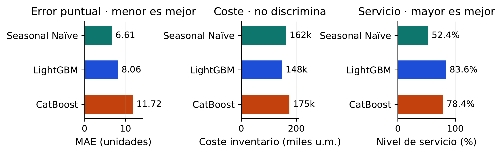
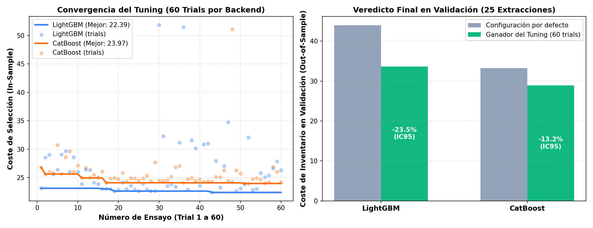
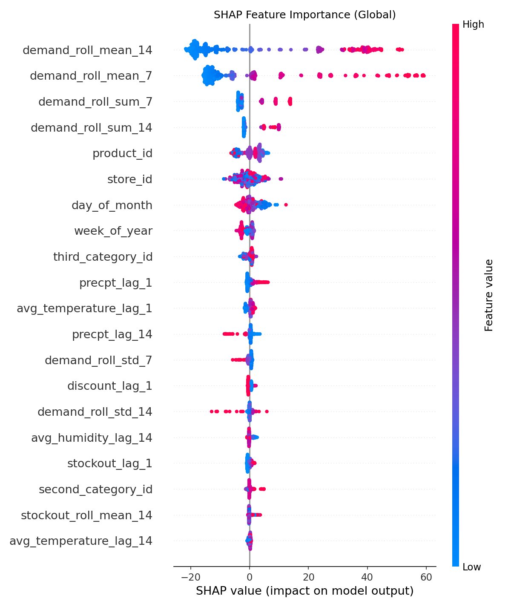
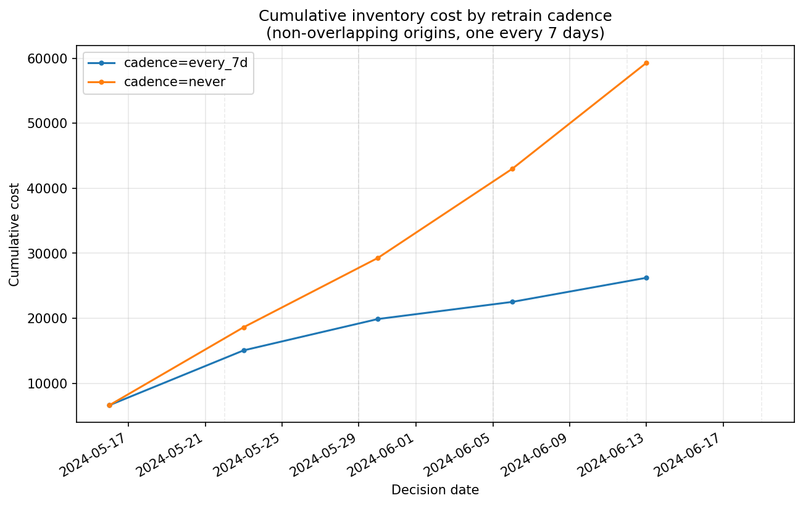
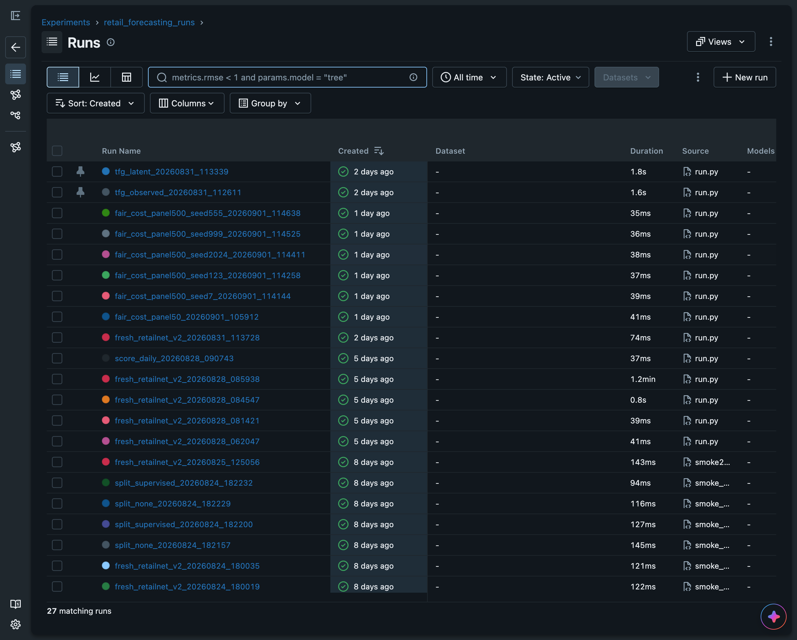

Modelado con Demanda Censurada, Calibración Conformal y Optimización Newsvendor
El dilema de la reposición en frescos: cuando el error estadístico destruye la rentabilidad y genera desperdicio alimentario.
| KPI | Métrica / Descripción | Objetivo Nominal | Resultado Empírico | Estado |
|---|---|---|---|---|
| KPI-1 | Cobertura conformal de intervalo $[q_{0.1}, q_{0.9}]$ | $\ge 80{,}0\%$ ($\alpha=0{,}2$) | 85,5% | Superado |
| KPI-2 | Ahorro en coste logístico Newsvendor vs Naïve | Ahorro $> 0\%$ | -9,03% | Superado |
| KPI-3 | Recuperación de demanda latente censurada | Reconstrucción sin fuga | -92,15% coste | Superado |
| KPI-4 | Retención de servicio en streaming (drift) | Fill rate semanal | 95,43% | Superado |
| KPI-5 | Calidad de ingeniería y reproducibilidad | Tests automatizados | 309 / 309 | Superado |
| KPI-6 | Latencia de ciclo completo de reentreno | $< 10$ segundos | 5,55 s | Superado |
Arquitectura causal desacoplada: desde la imputación de censura hasta la decisión óptima de inventario.
La demanda observada $Y_t$ queda truncada por el stock disponible $I_t$:
El protocolo estándar de evaluación sintética de censura es circular:
Garantía estadística finita libre de distribución ($1 - \alpha = 80\%$):
Fractil crítico óptimo derivado del equilibrio de costes:
La capa conformal traslada la incertidumbre epistémica directamente a la cantidad física de pedido $q^*$.
Evidencia empírica sobre 500 series temporales en backtesting walk-forward: el contraste entre error estadístico y coste operativo.

| Modelo | MAE | RMSE | Winkler (80%) | Coste Inventario (u.m.) | Nivel Servicio | Cobertura |
|---|---|---|---|---|---|---|
| Seasonal Naïve | 6,61 | 8,90 | n/a | 162.299 | 52,45% | n/a |
| CatBoost | 11,72 | 16,87 | 46,54 | 174.527 | 78,39% | 84,6% |
| LightGBM (Campeón) | 8,06 | 10,82 | 36,11 | 147.646 | 83,55% | 85,5% |

| Estrategia de Tratamiento | Coste Total (u.m.) | Fill Rate | Pedido Medio | $\Delta$ vs Observado (IC 95%) | Ahorro (%) |
|---|---|---|---|---|---|
| Observed (ventas sin corregir) | 3.732,37 | 60,30% | 4,84 | Referencia | Base (0%) |
| Latent Clipped Scaling | 2.784,60 | 70,77% | 5,80 | -947,77 [-973,12; -922,43] | -25,39% |
| Latent Historical Mean | 1.059,42 | 91,47% | 8,22 | -2.672,95 [-2.775,86; -2.570,03] | -71,62% |
| Latent Supervised (LGBM) | 293,12 | 97,50% | 8,02 | -3.439,25 [-3.539,61; -3.338,90] | -92,15% |
Las cuatro estrategias se puntúan contra la misma demanda real: 30 series muestreadas del panel de 500, $n = 293$ días censurados, media de 20 sorteos de censura sintética. El $\Delta$ es una diferencia emparejada, no una resta de agregados, y su intervalo al 95% no cruza el cero en ninguna de las tres reconstrucciones. La corrección supervisada reduce el coste un -92,15% y eleva el fill rate del 60,30% al 97,50%.


De los modelos estadísticos a una herramienta interactiva de soporte a la decisión en producción.
Síntesis de aportaciones, madurez científica e impacto directo en sostenibilidad.
Sistema de Predicción de Demanda para Retail con Análisis de Incertidumbre
Bajo la hipótesis de intercambiabilidad de las observaciones $(X_1, Y_1), \dots, (X_{n+1}, Y_{n+1})$, para cualquier distribución de probabilidad conjunta $P$:
El cuantil empírico ajustado se calcula formalmente como: $$\hat{q} = s_{(\lceil (n+1)(1-\alpha) \rceil)}$$
